Optimizer,
le Mode Héros
avant l'heure !
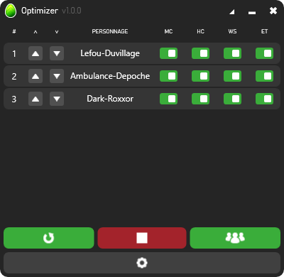
Améliorez votre expérience multicompte Dofus avec l'application Optimizer !
Le multicompte
n'a jamais été si confortable
Profitez des différentes fonctionnalités à votre disposition :
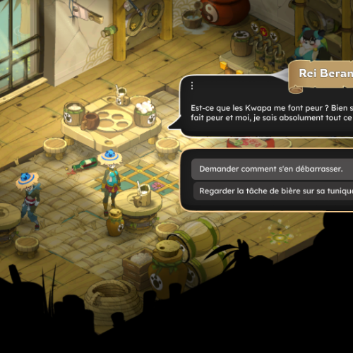
Mouse Clone
Le Alt+Tab au tapis :
un seul clic pour tous vos personnages !
Idéal pour les dialogues de quêtes, ouvertures d'inventaires, les zaaps, et bien d'autres...
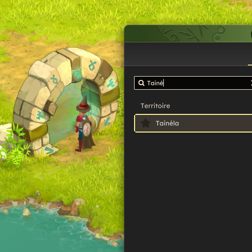
Hotkey Clone
Terminé le Ctrl+C / Ctrl+V :
une seule saisie pour chaque fenêtre !
Idéal pour la recherche de zaap, la recherche dans les inventaires, les consommables de téléportation.
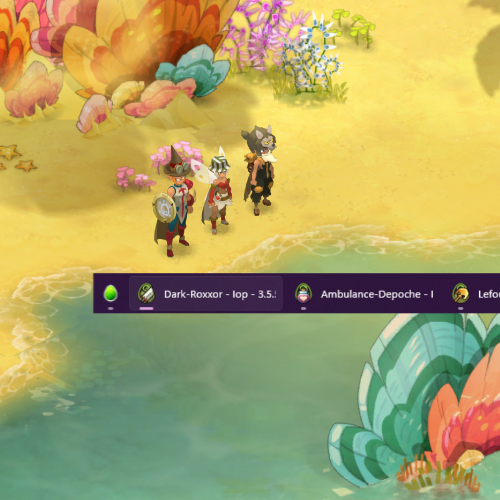
Window Switcher
Ne vous mélangez plus les pinceaux :
Changez de fenêtre avec simplicité !
Deux modes de navigations s'offrent à vous, défilez dans l'ordre de votre équipe, ou assignez une touche par fenêtre.
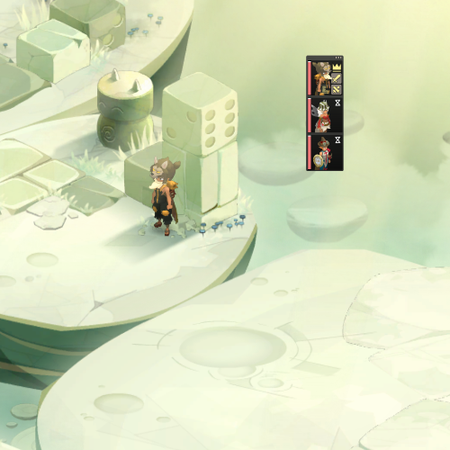
Easy Team
Créez votre équipe en un clic :
Un seul bouton pour les inviter tous !
Fini la perte de temps à cliquer sur vos personnages un par un, invitez les tous en un claquement de doigt.
Mouse Clone
Le Alt+Tab au tapis :
un seul clic pour tous vos personnages !
Idéal pour les dialogues de quêtes, ouvertures d'inventaires, les zaaps, et bien d'autres...
Hotkey Clone
Terminé le Ctrl+C / Ctrl+V :
une seule saisie pour chaque fenêtre !
Idéal pour la recherche de zaap, la recherche dans les inventaires, les consommables de téléportation.
Window Switcher
Ne vous mélangez plus les pinceaux :
Changez de fenêtre avec simplicité !
Deux modes de navigations s'offrent à vous, défilez dans l'ordre de votre équipe, ou assignez une touche par fenêtre.
Easy Team
Créez votre équipe en un clic :
Un seul bouton pour les inviter tous !
Fini la perte de temps à cliquer sur vos personnages un par un, invitez les tous en un claquement de doigt.
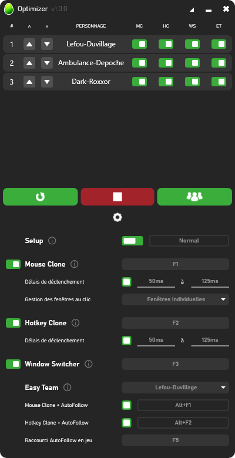
Moins de frustration
plus de plaisir !
Conçu pour réduire votre fatigue mentale et simplifier la répétition de vos actions entre vos différents personnages, Optimizer c'est :
- Une prise en main facile
- Une interface complète et ergonomique
- Des fonctionnalités flexibles
- Des mises à jour automatiques
- Adaptatif aux performances de votre PC
- Gratuit
Laissez-vous guider
Téléchargement
On dit merci qui ?
Merci Optimizer !
(bah quoi ?)
Si Optimizer a transformé votre expérience de jeu en multicompte, ou si vous souhaitez me remercier, vous pouvez me soutenir ici :
Supporter OptimizerEn me supportant, tu contribues à subvenir à mes besoins quotidiens en café, et ça c'est beau !
Prêt à l'adopter ?
C'est par ici !
1- Téléchargez et dézippez le dossier
2- Lancez et paramétrez Optimizer
3- Jouez et profitez !
Guide d'utilisation
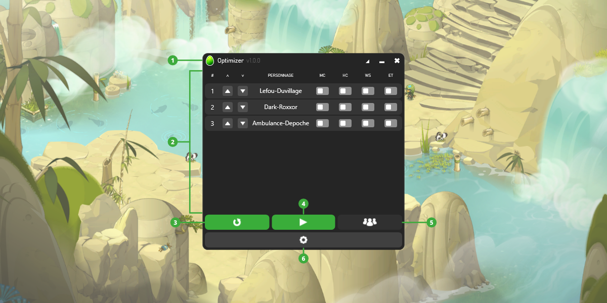
Interface principale
L'interface principale est relativement simple à prendre en main. Elle est composée des éléments suivants :
- La barre de titre : Contient la version de l'application, ainsi que le bouton Minimiser, le bouton Réduire et le bouton Fermer de l'application.
- La liste des personnages : Contient vos personnages dont la fenêtre est détectée par l'application. Chaque personnage possède deux boutons pour déplacer sa position dans la liste, et un interrupteur propre à chaque fonctionnalité. Vous pouvez activer une fonctionnalité sur tous les personnages en même temps en cliquant sur l'en-tête de colonne de la fonctionnalité.
- Le bouton Rafraîchir : Permet de mettre à jour la liste des personnages en effectuant une nouvelle détection des fenêtres du jeu.
- Le bouton Démarrer/Stopper : Permet de lancer/arrêter rapidement l'intégralité des fonctionnalités sur tous les personnages.
- Le bouton Easy Team : Permet d'exécuter la fonctionnalité Easy Team.
- Le bouton Paramètres : Permet de déplier/replier l'interface Paramètres.
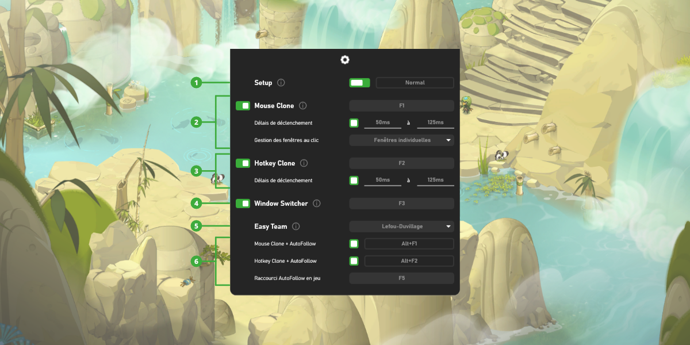
Interface Paramètres
L'interface Paramètres peut sembler plus chargée, mais elle n'est pas si difficile à appréhender. Elle comporte des éléments suivants :
- Paramètre Setup : Permet de définir la vitesse d'exécution des fonctionnalités selon les performances de votre PC.
- Fonctionnalité Mouse Clone : Activable/Désactivable - Permet de définir le raccourci de la fonctionnalité Mouse Clone, un délai de déclenchement entre chaque réplication de clic, ainsi que le mode de gestion des fenêtres du jeu.
- Fonctionnalité Hotkey Clone : Activable/Désactivable - Permet de définir le raccourci de la fonctionnalité Hotkey Clone, ainsi qu'un délai de déclenchement entre chaque réplication de saisie.
- Fonctionnalité Window Switcher : Activable/Désactivable - Permet de définir le raccourci de la fonctionnalité Window Switcher.
- Fonctionnalité Easy Team : Permet de définir un chef d'équipe, ce qui active le bouton Easy Team dans l'interface principale.
- Fonctionnalité AutoFollow : Activable/Désactivable - Permet de réactiver l'AutoFollow en jeu après une action spécifique grâce à un raccourci alternatif pour les fonctionnalités Mouse Clone et Hotkey Clone.
L'interface et les paramètres sont automatiquement sauvegardés et restaurés à chaque session !
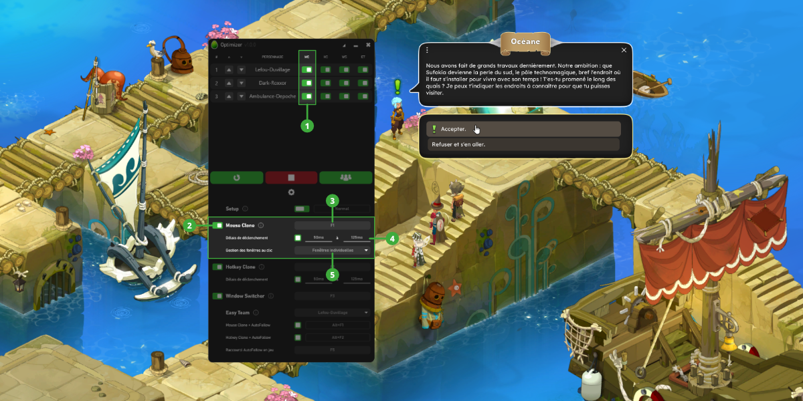
Mouse Clone
La fonctionnalité permet de répliquer un clic sur tous vos personnages dont la fonctionnalité Mouse Clone est active :
- Colonne MC : Permet d'inclure/exclure un personnage dans la fonctionnalité Mouse Clone.
- Interrupteur : Permet d'activer/désactiver la fonctionnalité.
- Raccourci : Permet de définir le raccourci de la fonctionnalité.
- Délais de déclenchement : Activable/Désactivable - Permet de définir un délai aléatoire entre chaque réplication. Le délai aléatoire est compris entre la valeur minimale et la valeur maximale.
- Gestion des fenêtres au clic : Permet de définir comment son gérées les fenêtres des personnages par la fonctionnalité :
- Fenêtre unique : Permet de répliquer un clic sur toutes le fenêtres du jeu depuis la fenêtre de votre personnage au premier plan (désactivé depuis la MAJ 3.5 car rendu inutilisable).
- Fenêtres individuelles : Permet de répliquer un clic en ramenant chaque fenêtre du jeu au premier plan successivement.
Comment activer et utiliser Mouse Clone :
- Paramétrez la fonctionnalité Mouse Clone.
- Activez Mouse Clone sur les personnages souhaités (colonne MC dans la liste des personnages).
- Activez la fonctionnalité Mouse Clone dans l'interface Paramètres.
- En jeu, utilisez le raccourci Mouse Clone pour effectuer un clic répliqué sur les personnages concernés.
Il est nécessaire d'avoir au minimum deux personnages avec la fonctionnalité Mouse Clone active pour rendre activable l'interrupteur Mouse Clone dans l'interface Paramètres !
Afin de garantir le bon fonctionnement de Mouse Clone, il est fortement recommandé d'utiliser la même disposition d'interface sur tous vos personnages.
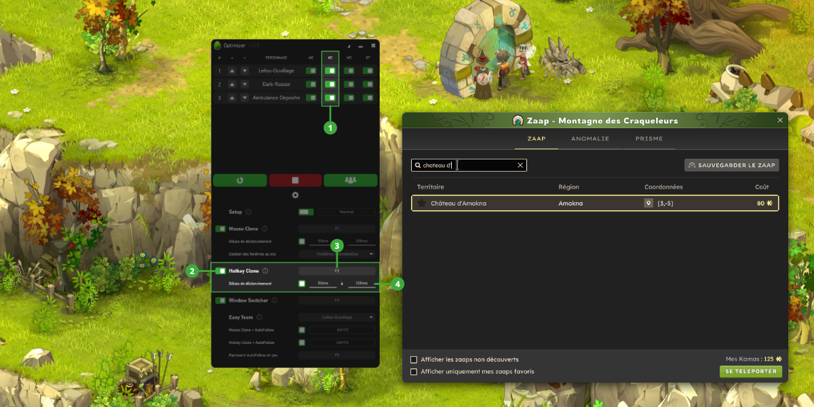
Hotkey Clone
La fonctionnalité permet de répliquer une saisie sur tous vos personnages dont la fonctionnalité Hotkey Clone est active :
- Colonne HC : Permet d'inclure/exclure un personnage dans la fonctionnalité Hotkey Clone.
- Interrupteur : Permet d'activer/désactiver la fonctionnalité.
- Raccourci : Permet de définir le raccourci de la fonctionnalité.
- Délais de déclenchement : Activable/Désactivable - Permet de définir un délai aléatoire entre chaque réplication. Le délai aléatoire est compris entre la valeur minimale et la valeur maximale.
Comment activer et utiliser Hotkey Clone :
- Paramétrez la fonctionnalité Hotkey Clone.
- Activez Hotkey Clone sur les personnages souhaités (colonne HC dans la liste des personnages).
- Activez la fonctionnalité Hotkey Clone dans l'interface Paramètres.
- En jeu, utilisez le raccourci Hotkey Clone une première fois pour enregistrer votre prochaine saisie, effectuez votre saisie (touche de raccourci ou plusieurs mots), puis réappuyez sur le raccourci Hotkey Clone pour répliquer votre saisie sur les personnages concernés.
Il est également possible d'enregistrer un ou plusieurs clics, cependant ils seront effectués avant chaque saisie répliquée. Son utilité reste limitée au focus d'un champ de saisie sur vos personnages.
Il est nécessaire d'avoir au minimum deux personnages avec la fonctionnalité Hotkey Clone active pour rendre activable l'interrupteur Hotkey Clone dans l'interface Paramètres !
Afin de garantir le bon fonctionnement de Hotkey Clone, il est fortement recommandé d'utiliser la même disposition d'interface sur tous vos personnages.
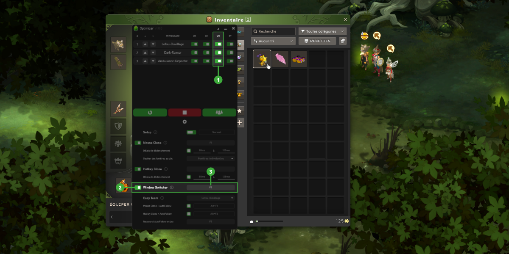
Window Switcher
La fonctionnalité permet de basculer entre les fenêtres de vos personnages dont la fonctionnalité Window Switcher est active :
- Colonne WS : Permet d'inclure/exclure un personnage dans la fonctionnalité Window Switcher.
- Interrupteur : Permet d'activer/désactiver la fonctionnalité.
- Raccourci : Permet de définir le raccourci de la fonctionnalité.
Comment activer et utiliser Window Switcher :
- Paramétrez la fonctionnalité Window Switcher.
- Activez Window Switcher sur les personnages souhaités (colonne WS dans la liste des personnages).
- Activez la fonctionnalité Window Switcher dans l'interface Paramètres.
- En jeu, utilisez le raccourci Window Switcher pour basculer de la fenêtre de votre personnage actif à la fenêtre du personnage suivant dans la liste.
Il est nécessaire d'avoir au minimum deux personnages avec la fonctionnalité Window Switcher active pour rendre activable l'interrupteur Window Switcher dans l'interface Paramètres !
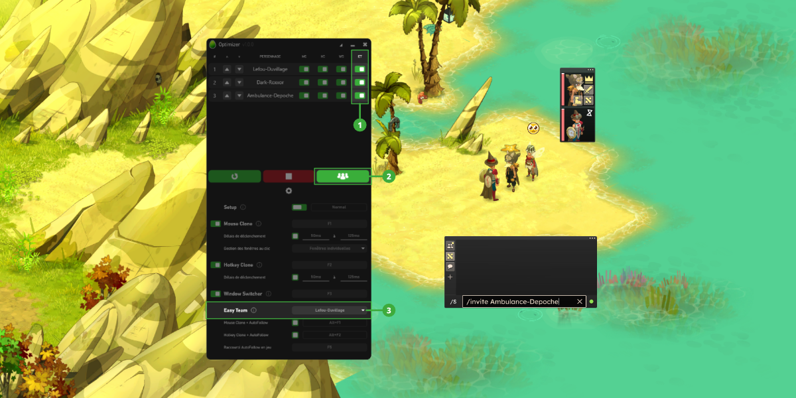
Easy Team
La fonctionnalité permet d'inviter en groupe tous vos personnages dont la fonctionnalité Easy Team est active :
- Colonne ET : Permet d'inclure/exclure un personnage dans la fonctionnalité Easy Team.
- Bouton Easy Team : Permet d'inviter en groupe tous vos personnages actifs depuis le chef d'équipe.
- Définir un chef d'équipe : Permet de sélectionner le chef d'équipe parmis vos personnages. Le chef d'équipe a automatiquement la fonctionnalité Easy Team activée.
Comment activer et utiliser Easy Team :
- Définissez un chef d'équipe dans les paramètres Easy Team.
- Activez Easy Team sur les personnages souhaités (colonne ET dans la liste des personnages).
- Appuyez sur le bouton Easy Team et laissez votre chef d'équipe inviter vos personnages.
Il est nécessaire d'avoir au minimum deux personnages (dont le leader) avec la fonctionnalité Easy Team active pour rendre actif le bouton Easy Team dans l'interface principale !
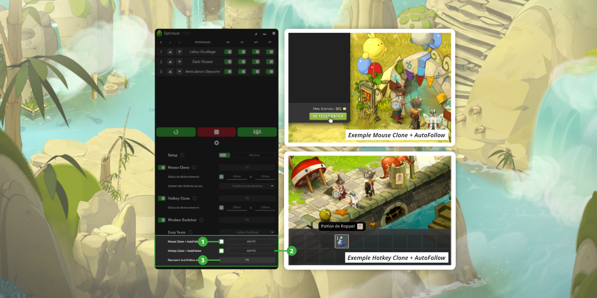
AutoFollow
La fonctionnalité permet de réactiver le suivi de chef d'équipe pour votre groupe :
- Mouse Clone + AutoFollow : Activable/Désactivable - Permet d'effectuer Mouse Clone puis réactiver l'AutoFollow sur votre chef d'équipe.
- Hotkey Clone + AutoFollow : Activable/Désactivable - Permet d'effectuer Hotkey Clone puis réactiver l'AutoFollow sur votre chef d'équipe.
- Raccourci AutoFollow en jeu : Permet de définir votre raccourci utilisé en jeu pour réactiver le suivi automatique de votre chef d'équipe.
Comment activer et utiliser Mouse Clone/Hotkey Clone + AutoFollow :
- Activez Mouse Clone/Hotkey Clone si ce n'est pas déjà fait. (requis)
- Sélectionnez un chef d'équipe dans Easy Team si ce n'est pas déjà fait. (requis)
- Activez la fonctionnalité Mouse Clone/Hotkey Clone + AutoFollow dans l'interface Paramètres.
- En jeu, utilisez le raccourci Mouse Clone/Hotkey Clone + AutoFollow pour effectuer un clic/une saisie répliqué(e) sur les personnages concernés, puis réactiver le suivi automatique du chef d'équipe. Les raccourcis Mouse Clone et Hotkey Clone restent également utilisables.
Vous devrez probablement changer votre raccourci de suivi automatique en jeu. Par défaut, le raccourci en jeu est Ctrl+W, mais dû à certaines contraintes, il n'est pas possible de définir une combinaison de touches en raccourci dans l'application.
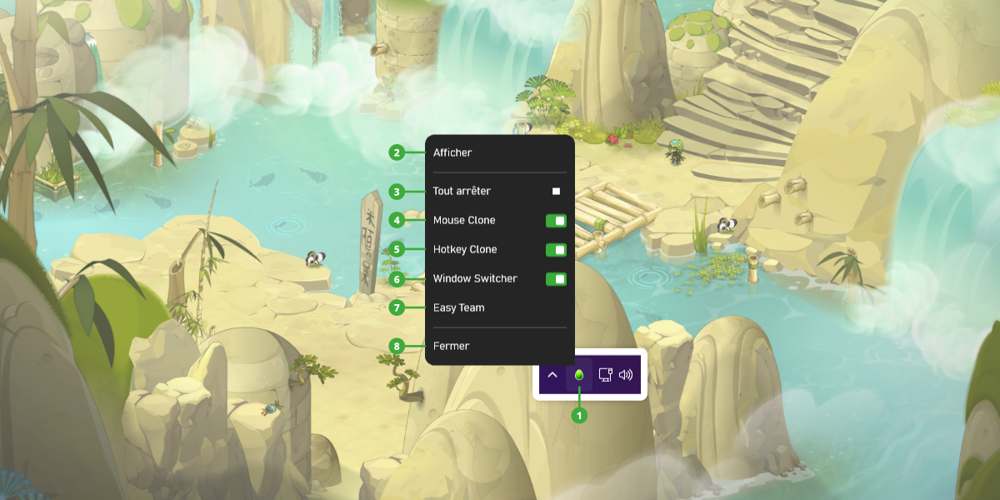
Tray Icon & Menu d'accès rapide
Il est possible de masquer l'application dans la barre d'état grâce au bouton Minimiser. Lorsque l'application est minimisée, un menu d'accès rapide peut être ouvert en effectuant un clic droit sur l'icône de l'application :
- Tray Icon : Icône de l'application masquée dans la barre d'état.
- Afficher : Permet d'afficher Optimizer à l'écran.
- Lancement rapide/Tout arrêter : Permet de lancer/arrêter rapidement l'intégralité des fonctionnalités sur tous les personnages.
- Mouse Clone : Permet d'activer/désactiver la fonctionnalité Mouse Clone pour tous vos personnages.
- Hotkey Clone : Permet d'activer/désactiver la fonctionnalité Hotkey Clone pour tous vos personnages.
- Window Switcher : Permet d'activer/désactiver la fonctionnalité Window Switcher pour tous vos personnages.
- Easy Team : Permet d'inviter en groupe tous vos personnages (nécessite un chef d'équipe sélectionné).
- Fermer : Permet de fermer Optimizer.
Questions fréquentes
Aucun prérequis particulier ! AutoHotkey est inclus dans l'application. Il te suffit de télécharger la dernière release, d'extraire le zip et de lancer Optimizer.exe.
Non, Optimizer est conçu exclusivement pour Dofus Unity. Cependant, il n'est pas impossible qu'une version adaptée voit le jour si la demande est importante.
Optimizer utilise AutoHotkey pour simuler des interactions clavier/souris, exactement comme le ferait un joueur humain. Il ne modifie pas les fichiers du jeu, n'injecte pas de code et ne lit pas la mémoire du jeu. À ce jour aucun cas de sanction lié à son utilisation n'a été rapporté, mais nous ne pouvons garantir l'absence de risque et déclinons toute responsabilité en cas de sanction de la part d'Ankama.
Lance Dofus et connecte tes personnages, puis clique sur le bouton Refresh dans Optimizer. Les fenêtres détectées apparaîtront automatiquement dans la liste. Si tes personnages sont déjà en jeu lorsque tu lances Optimizer, ils seront automatiquement détectés par l'application.
Essaie de passer la vitesse d'exécution en mode Lent ou Normal dans les paramètres. Sur certaines configurations, un délai plus important est nécessaire pour que les fenêtres aient le temps de répondre.
- Lent - PC anciens ou connexions instables
- Normal - Convient à la majorité des configurations
- Rapide - PC performants avec une connexion stable
Mouse Clone réplique un simple clic sur toutes les fenêtres actives. Hotkey Clone enregistre une séquence complète (clics + touches) et la réplique sur toutes les fenêtres actives.
Easy Team automatise l'envoi des invitations /invite depuis la fenêtre du chef d'équipe. L'acceptation de l'invitation reste manuelle, mais Mouse Clone peut faciliter cette étape en répliquant le clic d'acceptation sur toutes les fenêtres simultanément.
Oui ! Window Switcher bascule vers le personnage suivant dans la liste à chaque pression du raccourci, quel que soit le nombre de personnages ayant la fonctionnalité active.
À chaque lancement, Optimizer vérifie automatiquement si une nouvelle version est disponible sur GitHub. Si c'est le cas, elle est téléchargée et installée silencieusement. L'application redémarre ensuite automatiquement.
Oui, tes paramètres sont sauvegardés dans un fichier settings.json indépendant de l'application et ne sont pas affectés par les mises à jour.
Il est possible que les requêtes de mise à jour soient saturées, entraînant l'échec de la mise à jour. Si cela se produit, attends une heure avant de réessayer. L'application reste utilisable dans sa version actuelle. Si le problème persiste, tu peux remonter le problème via le formulaire de contact ou sur le serveur Discord.
Si cela arrive, essaie de lancer Optimizer.exe en tant qu'administrateur. Si le problème persiste, tu peux remonter le problème via le formulaire de contact ou sur le serveur Discord.
Vérifie que AutoHotkey64.exe est bien présent dans le dossier Optimizer/Resources/Binaries de l'application. Si c'est le cas, essaie de lancer Optimizer.exe en tant qu'administrateur. Si le problème persiste, tu peux remonter le problème via le formulaire de contact ou sur le serveur Discord.